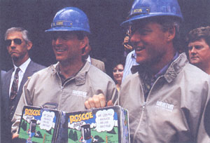
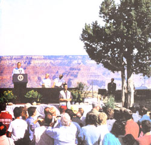
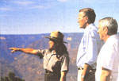
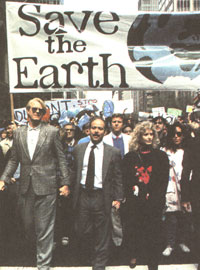

Earth Diary
Asking Questions How Green Is My Party?
MOTHER is not in the business of endorsing presidential candidates, but rather of providing information. We assigned this piece with no formed point of view; we simply requested the facts. We feel the facts as presented and the re spective records speak for themselves.
-The Editors
Every four years we must endure the paroxysm of politics and propaganda that's known as a presiden tial election. But this year has been weirder than most. Since January, we've witnessed the rise and fall of three decidedly dull Democratic candidates and one eccentric governor who have some of the better environmental records in the country. A former grand wizard of the Ku Klux Klan briefly threw his hat in the ring before it was fed to him in tatters by the Republican party. A reactionary columnist stood to sing the sermon of the right-wing and then slithered back home again. And a twangy Texas billionaire led, and then abandoned, the biggest just-say-no-to-Washington movement ever.
President Bush and Governor Clinton, as the primary survivors, are now running through their litanies on the economy, health care, and education. But the one issue that affects us all has received precious little attention: the environment. So we at M OTHER decided to scratch the composed facades and find out just how much green runs through each candidates' blood.
"I would be a Republican president in the Teddy Roosevelt tradition. A conservationist. An environmentalist."
-George Bush campaign statement, Sierra magazine, 1988.
When candidate George Bush stood on the banks of Boston Harbor and vowed to be the environmental president, it seemed a sea change from eight years of Ronald Reagan's neglect. Once elected, President Bush made an encouraging start by reinvigorating the Environmental Protection Agency (EPA) and pushing for a stronger Clean Air Act. But as the economy slipped, so did Bush's resolve. Campaign promises ranging from "no new taxes" to "no net loss of wetlands" degenerated into Orwellian double-speak.
The wetlands issue was a classic example of how politics can blunt the best intentions of our regulatory agencies. By 1986, the U.S. was losing 290,000 acres of wetlands each year, mostly to agriculture. These fragile areas provide vital flood and pollution control as well as habitat for a myriad of plant and animal species. In 1989, scientists from four federal agencies issued a joint identification manual for wetlands, giving federal and state agencies a common standard to protect the estimated 103 million acres of wetlands remaining in the lower 48 states.
But developers and the powerful agricultural lobby found the definition too restrictive and took their case to the White House Council on Competitiveness-a closed-door, cabinet-level committee chaired by Vice President Quayle that has attacked environmental regulations. The wetlands manual was two years in the making, but the Quayle council, whose members needed a glossary of wetlands terminology to even discuss the issue, came up with their own definition. At one point Quayle reportedly asked: "Why don't we just say when it's wet, it's wet?"
Scientists estimated that the council's definition would open 50 million acres of Wetlands to development, including I roughly half of the Everglades National Park. It is now being reviewed by the EPA and has generated more than 90,000 public comments.
The President's Competitiveness Council again made headlines last June when it proposed regulations that undermine provisions of the new Clean Air Act. The act is one environmental laurel President Bush can claim, although during legislative debate he threatened to have Republican senators filibuster the bill until smog, auto, and air toxic controls were substantially weakened. But in his State of the Union address last January (in which the environment was not even mentioned), President Bush announced his first 90-day moratorium on new regulations, effectively blocking the Clean Air Act regulations. The measures would expand the system of reporting air pollution. They would also require industries to give state regulators 45 days notice before making changes that cause increases in emissions, which would allow for public hearings.
But Quayle's council said the rules were too tough on the nation's 35,000 industrial polluters. He proposed they be allowed to make "minor" changes that increase emissions without public hearings or judicial review, which critics have labeled a clear violation of the law. Under the council's plan, the EPA would have 45 days and the states would have 90 days to reject the changes, but industries could continue to pollute at increased levels during the interim. After a prolonged battle with EPA over the rules, the Competitiveness Council passed its version in June. Representative Henry Waxman (D-Cal), one of the chief architects of the law, told the Washington Post the administration was "carving the heart out of the new Clean Air Act that the president used to point to as the high point of his domestic program."
Another high point, at least in Bush's eyes, was his national energy strategy. In 1991, just days before U.S. troops liberated the oil-rich fiefdom of Kuwait, President Bush unveiled what he called "a balanced and comprehensive blueprint for achieving America's energy, economic, and environmental goals." But instead of endorsing conservation and alternative fuels, the former Texas oil man wholeheartedly adopted the oil companies' agenda. The plan stressed energy production. It provided billions in new subsidies to the oil, gas, coal, and nuclear industries. It called for the equivalent of 150 new nuclear reactors to be built by the year 2030 and reduced public participation in the nuclear regulatory process. As a plum on top of the energy pudding, the president proposed opening the pristine coastal plain of the Arctic National Wildlife Refuge to oil development. The plan did have some conservation measures, but instead of curbing the country's addiction to fossil fuel, the president's strategy assumed that in 20 years our oil consumption would increase by 13 percent. In addition, the plan predicted that carbon doixide emissions from burning fossil fuels would rise 26 percent.
Perhaps the most onerous of President Bush's initiatives, however, is his continued subversion of the Endangered Species Act, our strongest environmental law and the last bastion of the increasing number of species that are creeping toward extinction. In the most egregious example, the administration continues to undermine a legally-mandated recovery plan to save the threatened northern spotted owl, an indi cator species for the Pacific northwest's majestic old-growth forests. Interior Secretary Manuel Lujan, Jr., has released an alternate "preservation plan" which has no legal standing but is favored by the administration because in the short term it would save more logging jobs-if not forests or owls.
In addition, the cabinet-level Endangered Species Committee-better known as the God Squad for its power to condemn a species to extinction-voted to allow logging of 14 tracts in the owl's Oregon habitat. The U.S. Fish and Wildlife Service had previously said that the logging would jeopardize the owls' existence. The sales have since been halted by the courts. Throughout the country, President Bush has continued keeping harvest quotas in the national forests unsustainably high, though two-thirds of the sales lose money.
The best summary of Bush's environmental philosophy, however, can be found in his response to last June's Earth Summit. As leader of the largest polluting nation, Bush vowed to boycott the meeting unless specific targets were dropped from a treaty to reduce emissions that contribute to global warming. His officials worked hard to get a treaty to protect the world's plant and animal species, but even after winning major concessions, Bush refused to sign it. When he addressed the conference, the president spoke for an entire seven minutes, lecturing the leaders of some 170 countries that he had to consider American jobs first. While Bush was apparently turning the U.S. into the evil empire of the environment, Germany and Japan were pushing for tougher requirements. And no wonder. With years of research and development behind them, two of the most successful industrial nations on the globe are poised to corner the market on the fastest growing industry of the '90s: environmentally clean technology.
Reflecting on President Bush's record, perhaps I was too hasty to disparage his pledge to be the environmental president. I assumed he was talking about the natural environment. Now I realize he was referring to America's industrial environment. So much for the sea change.
"I believe we need a real environment president in Washington, not someone who just pays lip
service to the issue."
-Bill Clinton, 1992.
Responding to our questions, the governor of Arkansas pushes all the right buttons. He wants to reduce emissions of carbon dioxide to 1990 levels by the year 2000. He supports wilderness designation for the Arctic National Wildlife Refuge and permanent bans on oil drilling off of the Atlantic and Pacific coasts. He favors raising CAFE standards to 40 mpg and promises to encourage the development of renewable energy sources and energy conservation. He opposes weakening the Endangered Species Act and building new nuclear power plants. He also supports no net loss of wetlands. And by picking Senator Albert Gore (D-Tenn) as his running mate, he has added one of the strongest champions of environmental issues in Congress to the ticket.
But as my cousin once said, "Try as you might, you can't quite get over the feeling hat Clinton is trying to sell you a `74 Vega." During his nearly 12 years as governor, Clinton's environmental record has been less than stellar. The 1991-92 Green Index, a state by state analysis of environmental quality, ranked Arkansas 48th in terms of environmental health, and 50th new environmental policies-numbers Clinton disputes. Admittedly Arkansas has more than its share of environmental problems, most of which evolved before Clinton took office. Though rural, the state has substantial mining and chemical industries and is home to two of the nation's largest meat-processing companies-Tyson Foods and Hudson Foods-which support thousands of hog, beef, and poultry operations and their requisite wastes. Arkansas has the dubious honor of being the broiler capitol of the country.
Arkansas' notoriously weak enforcement laws came bubbling to the surface in the late 1970s when some of the 2,000 residents of Green Forest, a city in in northwest Arkansas, began complaining of polluted well-water. A Tyson chicken plant nearby refused to build a pretreatment facility for the one million gallons of wastewater it produces every day. Instead, they made a simple initial treatment, pumped it into the municipal facility of Green Forest, and paid the city a surcharge to handle final treatment. The city's small system just couldn't handle it and the overflow was dumped into a nearby creek and ended up in people's wells. Residents' pleas for government intervention went unheeded until the situation reached emergency levels. Finally, in 1984, Clinton declared the contamination in the town and parts of the surrounding county "a disaster emergency"
"We were very fortunate that nobody died," says Green Forest mayor Roy Larimer. "Some people got dysentery." The disaster order made low-interest loans available which were used for a $5 million renovation of the wastewater treatment facility and for running water lines to many rural residents. Tyson spent $3 million on a pre-treatment plant as well. This year the Green Forest facility won an EPA award for being the best wastewater treatment plant in EPA's region six. Yet nearly a decade after the problem surfaced, many residents in and around Green Forest still buy bottled water for cooking and drinking. Larimer admits that the problem still exists in parts of the county. Just a week be fore we spoke, a woman had come into his office complaining of a polluted well.
"It's been the history of the American people," Larimer philosophizes. "We go and go and go with progress and then we have to stop. But the people are working together to keep it clean." After a pause he adds, "I don't think you can blame Governor Clinton or Senators Bumpers or Pryor for pollution in Arkansas."
Maybe. Maybe not. After a dozen years in the governor's office and a lifetime in Arkansas, the problem of animal waste cannot be new to Bill Clinton. In 1989, Clinton established a task force to address the issue that has been soundly criticized for its industry bias and slowness to act. Since 1990, it has issued one proposal to deal with liquid waste, affecting some swine and cattle operations. A second proposal to deal with the larger problem of chicken waste was withdrawn after it was found to be weaker than the tepid regulations currently on the books.
Nearly all of the chicken waste generated in Arkansas is dealt with by spreading it on fields. "If you have thousands of farmers spreading chicken litter in a concentrated area in northern Arkansas, you're going to have runoff," says Charles Moulton, an assistant attorney general charged with enforcing environmental laws. "Once the soil saturates, waste runs off into surface water or leaches into the groundwater." Yet poultry industry officials deny they are the cause of the problem. "There is no scientific evidence that the poultry industry has contributed to the degradation of water quality in northern Arkansas," says Tyson Food's spokesman Archie Schaffer, a claim Moulton says is simply wrong. Almost half of the 600 miles of streams in the northwest corner of Arkansas where the poultry industry is concentrated are so polluted that swimming in them is forbidden. Clinton, who has received both large campaign contributions and free air travel from Tyson Foods, did not respond to questions on animal waste.
Clinton has also drawn fire for his acquiescence of medical and hazardous waste incinerators. Grass roots groups fought construction of four medical waste incinerators, petitioning the governor to stop construction until the environmental impacts of the plants could be studied. Clinton replied that such an order would be illegal, despite the fact that governors in other states have successfully issued similar stays. Clinton claimed that once the permits were issued, his hands were tied.
He did urge the PC&E commission to reevaluate the permits and hold public hearings on the matter. The commission agreed to a moratorium on all but the contested incinerators. Arkansas' attorney general then filed suit against the commission over the permitting process and the case is pending before the state supreme court. "It's pretty well known that incinerator permits are easily attainable in this state;" Moulton says, noting that there were nearly a dozen permits pending. "If somebody didn't take them to court," he adds, "we could be the mecca for medical waste."
Perhaps the most controversial incinerator issue has been in the town of Jacksonville, where the state and EPA are in the process of burning some 28,300 barrels of toxic waste, 140 vats of chemicals, and some 100 acres of contaminated soil from an abandoned pesticide factory outside of town. The waste, some of which is laced with highly carcinogenic dioxins, is the legacy of Hercules, Inc., a former Defense Department contractor that produced 14 million pounds of Agent Orange at the site during the Vietnam War. Hercules sold the plant to a company called Vertac in the mid-'70s, and in 1979 inspectors found leaking barrels and dioxin contaminated soil at the site. Once they began looking, they discovered dioxin in creeks, rivers, and lakes downstream for a distance of 120 miles. Even worse, some residents began to noticed an abnormally high incidence of health problems: miscarriages, birth defects, and rare cancers. Vertac, facing mounting lawsuits and public outrage, declared bankruptcy in 1986, shut down the plant and moved out of state.
Local activist groups were understandably concerned when the Clinton administration, on the advice of EPA, decided to incinerate the leftover toxins. They offered several alternatives, but Clinton was not dissuaded, saying that incineration was the only legal method of disposal. After anti-incinerator activists lost their court battle to halt the burning, the incinerator began operation in January. But it's been plagued by unsettling problems. During test burns, the contractor accidentally fed dioxin contaminated waste into the incinerator and monitors on the site picked up the poison in the air. The EPA site manager said the amount was minute, and that the problem was immediately corrected. Later, a new kiln was found to have a cracked weld and another time there was a small explosion as workers were handling the barrels. No one was hurt in either case and EPA and the governor's office maintains that the site poses no health problem whatsoever to the people of Jacksonville.
But Sharon Golgan, of Jacksonville Mothers and Children doesn't trust the EPA or Clinton. "They're trying to make you believe you can sprinkle this stuff on your breakfast toast and it won't hurt you;" the 44-year-old grandmother says. Golgan cites numerous cases of children in the area who have suffered from rare diseases, including three boys who contracted T-cell leukemia within the last three years. The disease, common in veterans exposed to Agent Orange, is normally found in one person out of 100,000, Golgan says. Jacksonville has a population of 30,000, half of which live on an Air Force base near the site. Despite the efforts of Golgan and others to get Clinton to shut down the incinerator, Golgan says he just didn't want to get involved.
On the more positive side, Clinton championed a comprehensive legislative package in 1991 that included several environmental reforms. Penalties were increased for polluters and the Attorney General was given specific powers to enforce environmental laws. The package also reaffirmed an earlier commitment to plant 10 million trees in the state during the next decade. Although the reforms were not as tough as they could have been, they were pretty good for Arkansas.
But perhaps the best thing that Bill Clinton has done for the environment is to add Senator Albert Gore, Jr., to the ticket. The two-term senator from Carthage, Tennessee, has championed environmental causes from hazardous waste dumping to nuclear arms control. He made the environment a, issue during his failed run for the Democratic nomination in 1988 and was poised to run again when he suffered a personal tragedy. His six-year-old son, Albert III, was nearly killed by a car outside of Memorial Stadium in Baltimore after the family came out of a Baltimore Orioles game. Gore gave up his presidential bid to help with his son's long recovery. That experience, he says, became the catalyst for exploring ways to heal the Earth's environment.
The result was a best-selling book called Earth in the Balance.: Ecology and the Human Spirit (Houghton Mifflin; 1992). In its introduction, he writes: "The integrity of the environment is not just another issue to be used in political games for popularity, votes, or attention. And the time has long since come to take more political risks-and endure much more political criticism-by proposing tougher, more effective solutions and fighting hard for their enactment." That thought, from a man who may one day chair the White House Council on Compeititiveness, is enough to give any industrial polluter a well-deserved case of acid indigestion.
That's the crux with Bill Clinton. He may be trying to sell us a Vega. But with Gore riding shotgun, it might be the best deal for the environment this year.
|
 NINA BERMAN/SIPA |
 DIANA WALKER/GAMMA LIASON |
 ANDREW HOLBROOKE/B LACK STAR |
|
 |
|
|